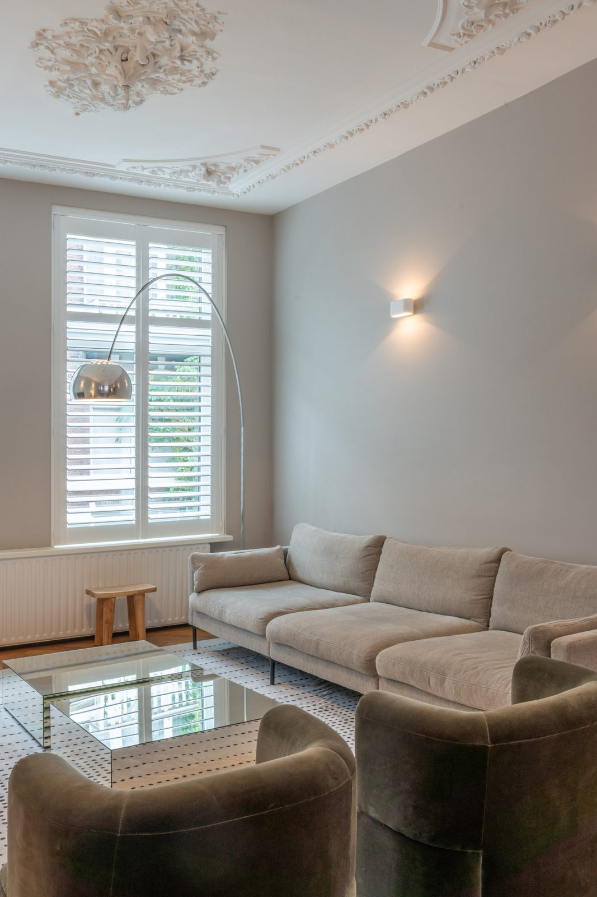
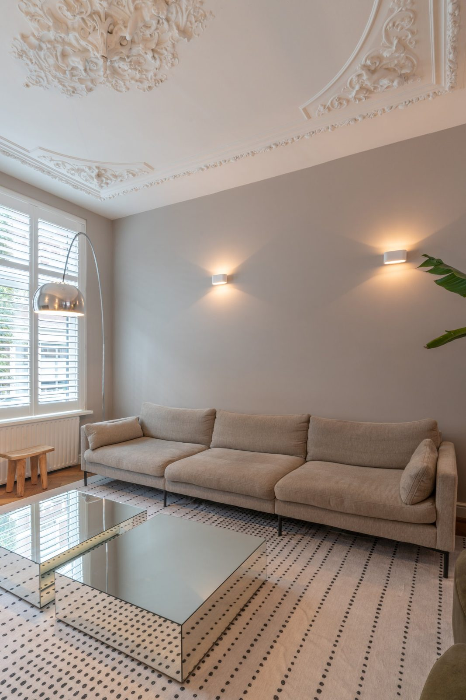
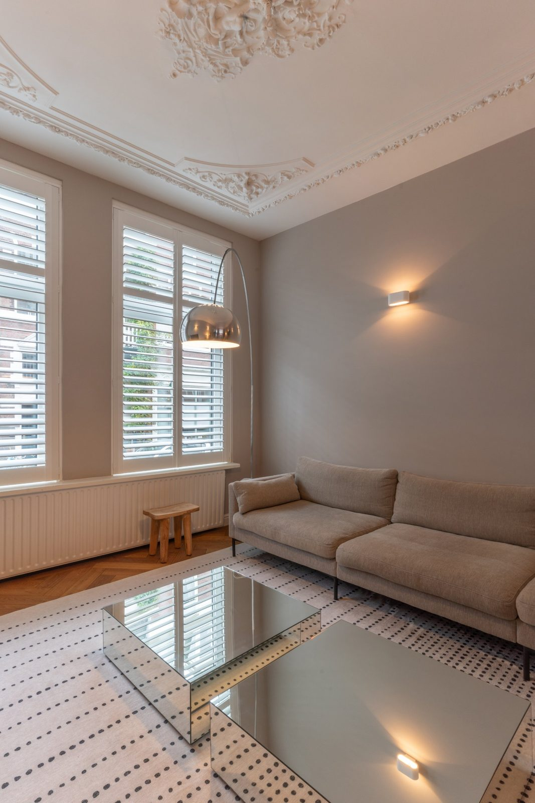
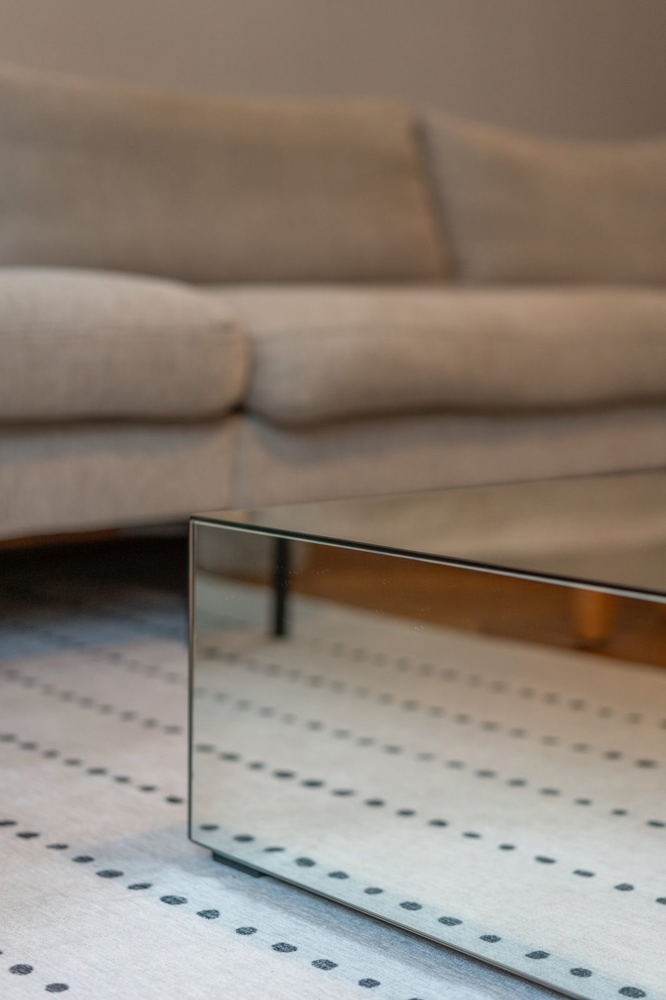

A restored city apartment in The Hague
Apartments · The Hague


The brief
A first-floor apartment in a listed building had been divided into small, dark rooms. The owners wanted the original proportions back, and a home that works for two people who both work from it.
The approach
Later partitions were removed to recover the enfilade of the original floor plan, and the cornices, shutters and window frames were restored rather than replaced. A single new volume holds the kitchen, storage and a study, so the period rooms stay unbroken.
Lighting was rebuilt from scratch: layered, warm and mostly indirect, so the tall ceilings read as height in the evening instead of shadow.



Restored mouldings, one new volume and warm indirect light: the original plan reads as a whole again.
Materials and details
Restored parquet, chalk-based paint and brushed brass, with a deep green lacquer used only in the new volume so the addition is legible against the restored shell.
Project information
- Services
- Restoration design · Spatial planning · Joinery · Lighting · Furniture & styling
- Location
- The Hague, Netherlands
- Property type
- Listed apartment, first floor
- Photography
- Por definir